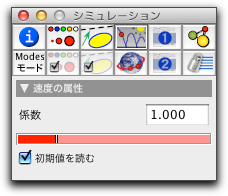

速度

速度の矢線は次の2つの目的で使用します:
- 初期化: シミュレーションが始まると、速度矢線を持つ質点は、対応する値で速度を初期化します。（速度の「初期値を読む」がチェックされているときだけそうなります）。
- 表現: アニメーションの間、矢線は常にそのときの速度を表します。
矢線の長さと速さとの関係は一概には決められません。したがって、いくつかの約束事が必要です。 CindyLab の約束事がよく理解されるのは、アニメーションスライダーをドラッグして最大にしたときでしょう。この場合、 シミュレーションの各ステップにおいて、質点は正確に矢の長さだけ進みます。この状況は、次の図に示されます。 (なお、この図は、速度の係数Factorを1.0にしています。)
 |
| 単位速度による質点の軌跡 |
多くの目的のためには、この動作は速すぎるかもしれません。しかし、速度についての処理を標準化するにはよい方法です。
速度インスペクタ
速度の基本的な属性は、 設定情報インスペクタ のシミュレーションタブ (上の列の4番目）を開いて、設定や変更ができます。シミュレーションタブは次のようになっています。:
 |
| 速度インスペクタ |
2つのコントロールの意味は次の通りです。:
- 係数: 速度の矢線の長さに対する大きさを変更します。通常は1.0に設定されます。係数を2にすると、同じ時間間隔に2倍の距離を進むことになります。
- 初期値を読む: このチェックボックスは、初期状態ではチェックされています。これがチェックされていると、シミュレーションの開始時に、引かれた矢の長さが計算されて、初速として点のデータに保存されます。ボックスがチェックされていなければ、最初の位置に関わらず矢線の長さは現時点での速度を示すためだけに用いられます。
CindyScriptと速度
CindyLabでのように、CindyScriptによって読み書きできるものがあります。次のものがそうです。:
- factor:速度の係数 (実数、読み書き可)
次もご覧ください
Page last modified on Tuesday 13 of March, 2012 [13:31:34 UTC].
The original document is available at
http://doc.cinderella.de/tiki-index.php?page=VelocityJ